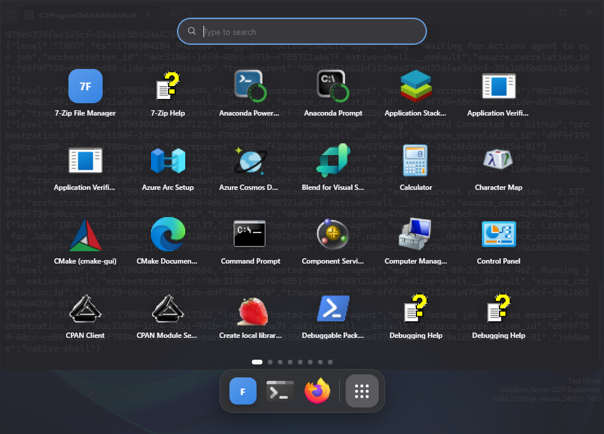
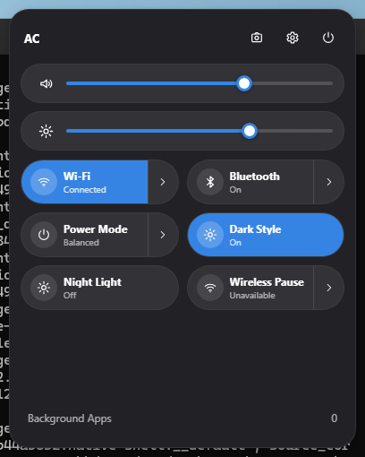
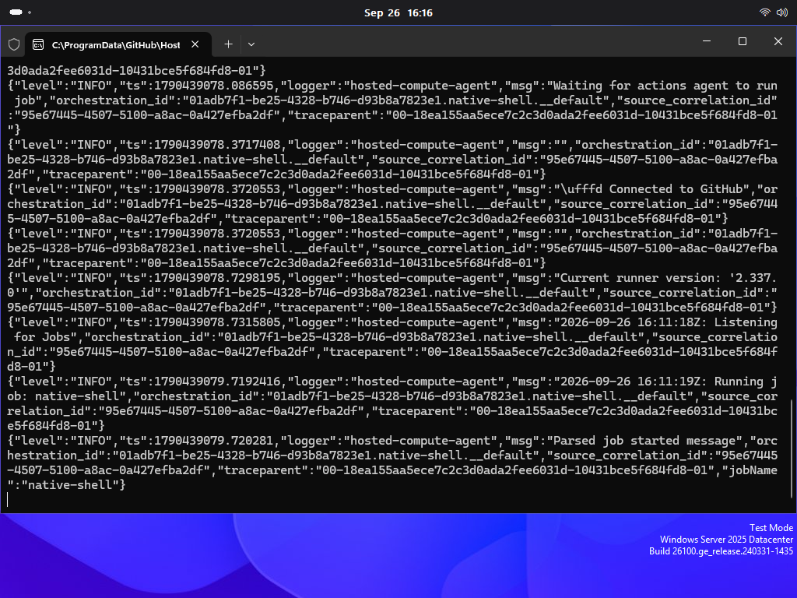

Gallery.
Fifteen desktop, shell and native-window surfaces are captured from the verified FedoraWin executable on Windows. The gallery viewer also includes two separately verified libadwaita captures. The gallery refresh pipeline launches the real Rust/Tauri runtime, waits for each surface to report ready, validates that the image is initialized and distinct, then publishes the evidence here.
Latest runtime capture provenance appears here automatically.
Open the verified album


Real Windows CI · GNOME 51 targetFedoraWin now has an isolated GTK4/libadwaita executable with a genuine AdwApplicationWindow, AdwToolbarView and AdwHeaderBar. Windows CI compiled and ran it, identified the GTK-owned Win32 window, and captured dark and light appearances. View both genuine Adwaita screenshots in the verified Actions artifact ↗ or inspect the native source ↗. This proof is not yet wired into the production FedoraWin shell. The 15 images above are the existing FedoraWin.exe and DWM capture set; its WinForms frame screenshots are not Adwaita headerbars.
Real Adwaita headerbar — dark and light.
These two images come from the separately compiled libadwaita executable. They are not DWM-colored WinForms windows, and they are not counted among the 15 production-shell captures above.
The full desktop capture uses GNOME 51’s default Roundhex wallpaper from GNOME/gnome-backgrounds 51.0 (backgrounds/adwaita-l.jxl, CC BY-SA 3.0). CI applies it only to the disposable Windows runner for the screenshot and restores the previous wallpaper afterward; FedoraWin does not force this wallpaper on user systems.
These images are generated only after the current executable is built and launched on a Windows runner. Activities captures are taken after the workspace surface reports ready, so the old persistent “Loading workspace…” frame is no longer accepted as gallery evidence. The gallery begins with a real full-desktop capture using GNOME 51 Roundhex, then includes dedicated Power Mode, Wi-Fi, Bluetooth and Wireless Pause flyout captures. The shell host now uses Windows transparency so rounded popovers composite over the desktop rather than exposing a rectangular WebView background. CI also compares host-corner pixels with the neighboring desktop; physical-device testing is still required for mixed DPI, unusual GPUs, HDR, touchpads and monitor hot-plug behavior.